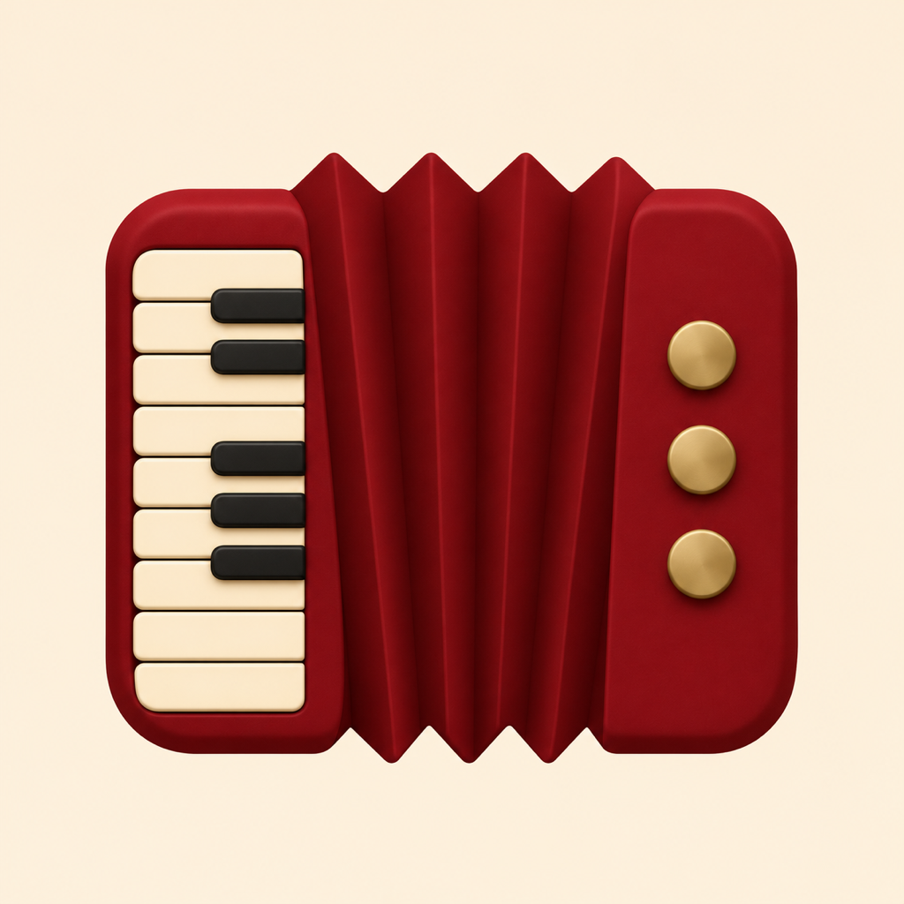

口袋手风琴
把手风琴放进口袋，想弹就弹。
用温暖的琴声奏出旋律，配上低音与和弦。跟着琴键提示练习短句，录下属于自己的演奏。
从一段旋律开始
简单模式适合熟悉琴键，标准模式提供黑键、低音与和弦。真实手风琴采样带来温暖琴声，可以随时录音、回听和分享。
用动作表达强弱
自动风箱按键即响。体感力度通过倾斜手机控制强弱，支持的折叠设备还可使用开合风箱。
Pocket Accordion
An accordion in your pocket, ready when you are.
Play melodies with bass and chords using sounds sampled from a real accordion. Explore simple and standard modes, follow guided keys through short phrases, and record your own performances.
Automatic bellows let you play with a touch. Tilt dynamics add expression, with folding bellows on supported devices.